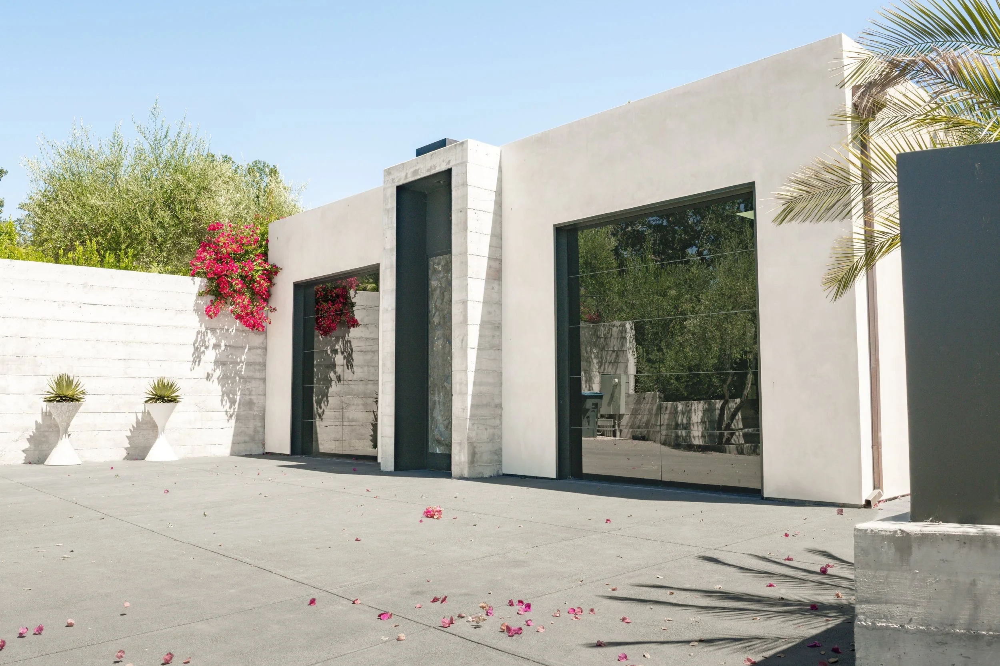
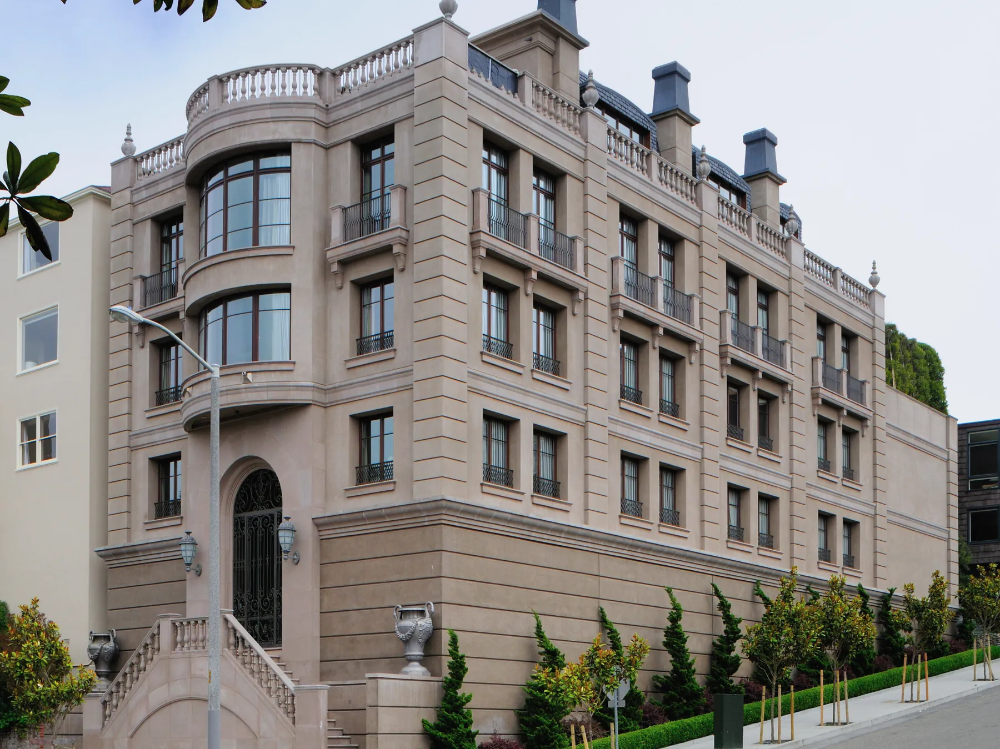
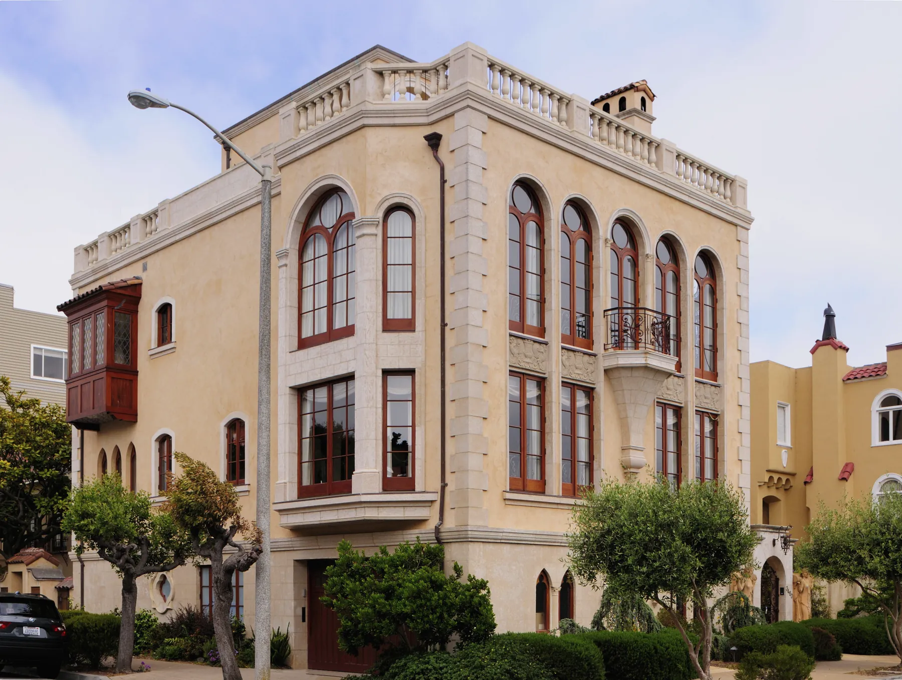
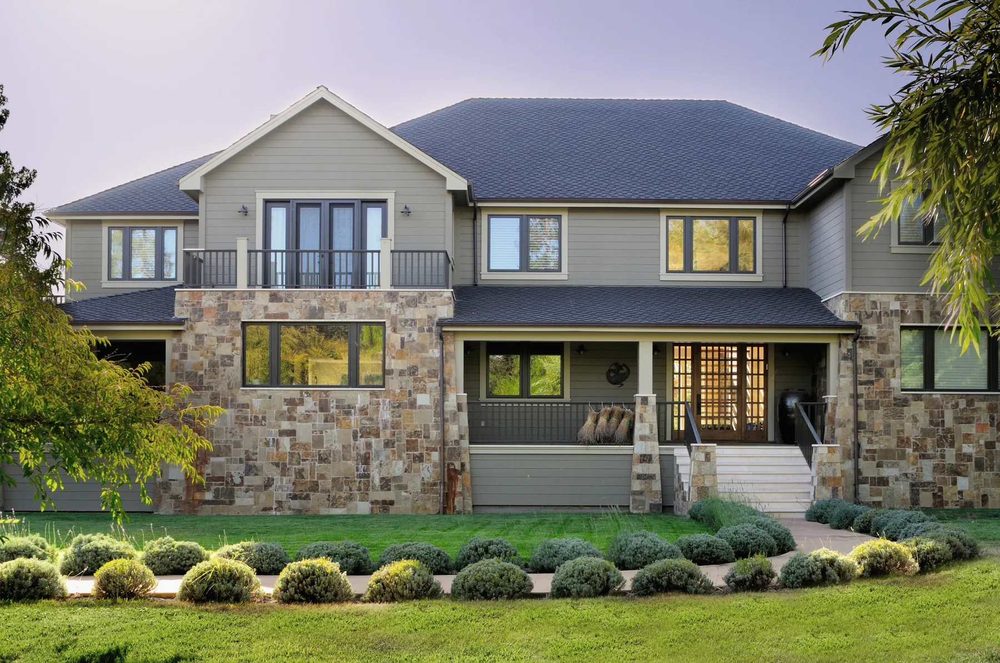

General contracting and construction management for high-end homes.
CWG has worked out of San Francisco since 1985, taking projects from first drawings through to the final walk-through: new construction, remodels, additions and ADUs.
Owner John Nittolo is known around the Bay Area for close attention to detail and the personal relationship he builds with each client.
Selected work




Talk to John about your project.
(415) 823-5600 2001 Union Street, San Francisco, CA 94123CWG. General contracting, San Francisco.Concept design, not a live site.